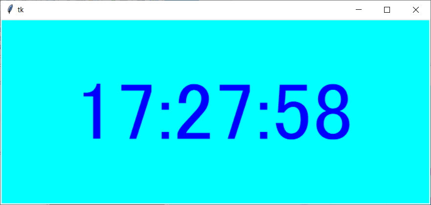
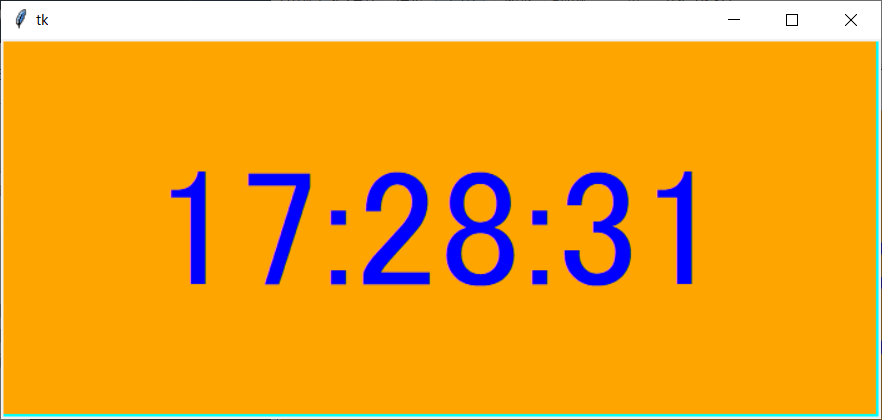
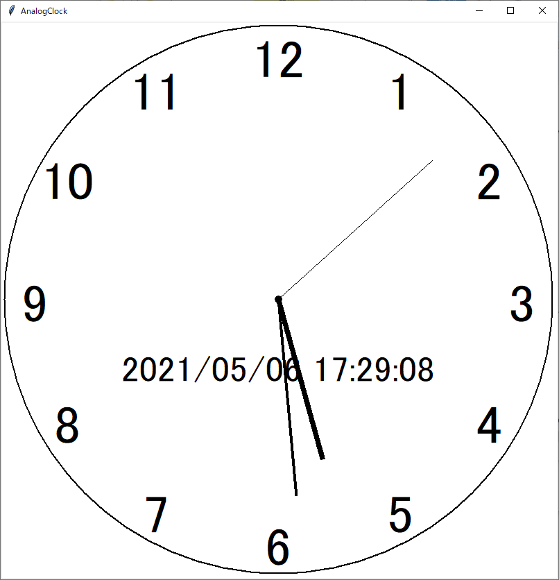

記事掲載：https://laptrinhcanban.com/ja
Pythonでストップウォッチの作り方のチュートリアル。このレッスンの後、timeモジュール、 datetimeモジュール、およびtkinterモジュール(GUI を操作する) を python に適用することにより、 pythonで作成された本当に優れた時計を作成できます。
Pythonでストップウォッチ作成 | デジタル
Pythonのtimeモジュールをpython tkinter モジュールと組み合わせて使用して、次のコード行で非常に優れたストップウォッチを作成できます。
clock.pyファイルを保存し、コンピューターで実行してストップウォッチのタイマーを表示するようにしましょう。
from tkinter import * |
上記のclock.pyファイルを実行すると、次のような本物の時計が表示されます。

線の塗りつぶし値のc.creat_rectangleを変更することで、時計の色を変更することもできます。たとえば、次のようなオレンジ色の時計です。

コードの説明
まず、import コマンドを使用して、必要なモジュール tkinter と datetime を time モジュールと共にインポートします。
コードの 4 行目で、Tinker Canvas を作成します。これは、画像やその他の複雑なレイアウトを描画するために使用される長方形の領域です。グラフィック、テキスト、ウィジェット、またはフレームをキャンバスに配置できます。
c = Canvas(width = 700, height = 300, background = '#00ffff') |
上記のように幅700px、高さ300pxのフォトキャンバスを作成し、青い木製の棚を置いたら、時間を描いていきます。
クロックは無限に実行されるため、while True を使用して無限ループを作成します。
各ループで:
- datetime.now() を使用して現在の時刻を取得します。
- 次のコード行を使用して、上記の瞬間を時:分:秒の形式に変換します。
s = '{0:0>2d}:{1:0>2d}:{2:0>2d}'.format(now.hour, now.minute, now.second) |
- 今回は create_rectagle() および create_text() メソッドを使用してフレームに入力します
- 現在の時刻を更新するため、0.1 秒待ってから次の時刻の入力に進みます。次のコード行を使用します。
c.update()
time.sleep(0.1)
最後に、プログラムを実行して結果を楽しみます。
Pythonでストップウォッチ作成 | アナログ時計
上記の長方形の電子時計に満足できない場合は、次のプログラムで美しいアナログ時計を作成してみましょう。
from tkinter import * ##GUI 操作用の tkinter。Python の実行時にウィンドウを作成します |
このプログラムには、sin、cos を使用して円を描くためのmath モジュールもあり、Python での Piの記事で詳細を確認できます。
上記のコード行をanalog.pyファイルに保存してプログラムを実行すると、本物のアナログ時計が表示されます。

まとめ
上記 Kiyoshi は、 python ストップウォッチの作成方法を示しました。Python を使用して、よりユニークで奇妙な製品を作成します。é.
URL Link
ホーム › 初心者向けのpython学習>>15. pythonのdatetime